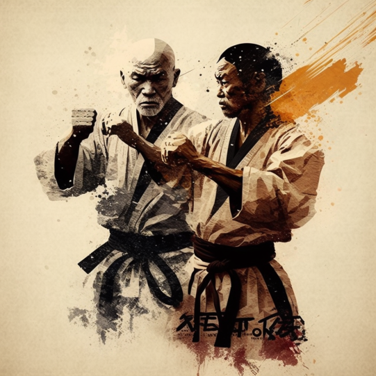

Karate
Karate, also karate-do, is a martial art developed in the Ryukyu Kingdom. It developed from the indigenous Ryukyuan martial arts under the influence of Chinese martial arts. While modern karate is primarily a striking art that uses punches and kicks, traditional karate also employs throwing and joint locking techniques. A karate practitioner is called a karate-ka. something to offer everyone.
Kyokushin is a style of karate originating in Japan. It is a full-contact style of stand-up fighting and is rooted in a philosophy of self-improvement, discipline, and hard training. Kyokushin Kaikan is the martial arts organization founded in 1964 by Korean-Japanese Masutatsu Oyama, officially the International Karate Organization. Previously, this institution was known as the Oyama Dojo. Since 1964, the style has continued to spread to more than 120 countries, becoming one of the largest martial arts organizations in the world, and in Japan itself.
History
Karate is a martial art that originated in Okinawa, Japan. It was developed by the indigenous people of Okinawa, who were influenced by Chinese martial arts. Karate was originally called "Tode" or "Toudi," which means "Chinese hand." The name was later changed to "Karate," which means "empty hand." Karate was developed as a form of self-defense and was practiced in secret by the people of Okinawa. In the early 20th century, karate was introduced to Japan and later to the rest of the world. Today, karate is practiced by millions of people around the world and is recognized as an Olympic sport.
Techniques
Karate is a striking art that focuses on punches, kicks, and knee strikes. The basic techniques of karate include punches, kicks, blocks, and strikes. Karate also includes throws, joint locks, and grappling techniques. Karate techniques are practiced in katas, which are pre-arranged sequences of movements that simulate a fight. Karate techniques are performed with speed, power, and precision. Karate is a dynamic and explosive martial art that requires strength, flexibility, and coordination.
Benefits
Karate is a great way to improve your fitness, flexibility, and self-defense skills. Karate is a full-body workout that builds strength, endurance, and agility. Karate also improves balance, coordination, and reflexes. Karate is a fun and challenging way to stay in shape and meet new people. Karate is a great way to relieve stress and improve your mental health. Karate is a lifelong pursuit that offers many physical, mental, and spiritual benefits.